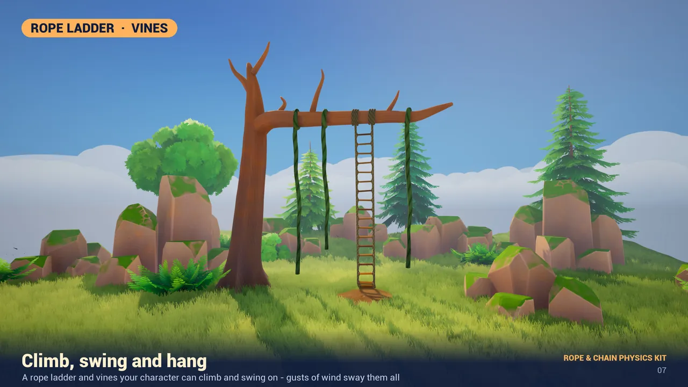
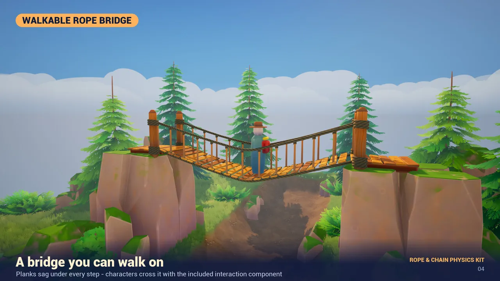
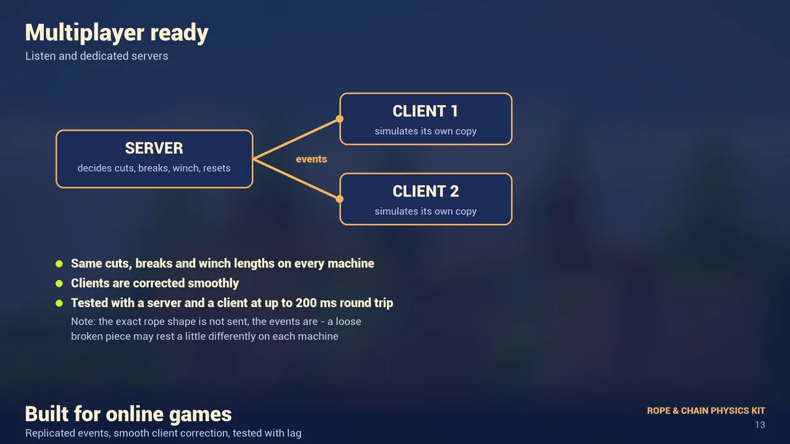
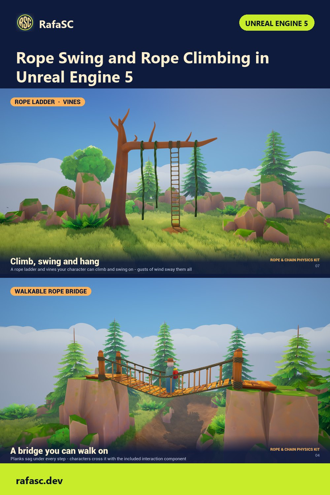

Characters and ropes
How to make a character swing and climb on ropes in Unreal Engine 5
To let a character swing on a rope in Unreal Engine 5, the rope has to be simulated (not animated) and the character has to grab a point of it and feed its movement input into the rope. Free ropes give a swing, rope ladders give a climb, and ropes fixed at both ends give a hand-over-hand traverse. A walkable bridge also needs planks that sag under the character's weight.
By RafaSC, 3D and technical artist · Updated · 5 min read

What changes with the type of rope
- Free rope or vine: the character hangs from it and swings. Move input pushes the swing.
- Rope ladder: two ropes and rungs. Up and down input climbs, and the ladder sways with the weight.
- Rope fixed at both ends: the character hangs and moves hand over hand along it.
- Rope bridge: the character walks on planks with collision; the bridge sags under every step.

The setup in Stylized Rope & Chain Physics Kit
The kit does this with one component on your character, RK Rope Interact:
- Add the RK Rope Interact component to your Character Blueprint.
- On your "Interact" input call
TryGrab(orReleaseifIsGrabbing). On Jump while grabbing callRelease(true). - Every tick while grabbing, call
SetMoveInputwith your move axes andSetClimbInputwith up and down.
That is all the character needs. Free ropes swing, rope ladders climb and ropes fixed at both ends traverse. The ropes decide what a character can do with two settings in their Details panel: Grabbable and Climbable.
Ready-made example: /RopeKit/Blueprints/BP_RK_ExampleCharacter (Enhanced Input). Set it as the Default Pawn of your Game Mode, or copy its four steps into your own character. It builds its own Input Actions at runtime (WASD, mouse, Space, E grab and let go, Q and C climb); assign your own Input Actions and Mapping Context in its Details panel to use your bindings.
A bridge that reacts to the character
BP_RK_RopeBridge has deck ropes, planks with collision, hand rails and posts. Characters and objects on the planks make it sag: the Loads group (Character Mass / Weight Scale, Physics Bodies Add Weight) controls how much. In my tests the demo character walking across the bridge stretched it 0.7 %.

Multiplayer: who decides what
In listen-server and dedicated-server games the server decides every gameplay event and each machine simulates its own copy of the rope.
- Grabbing and letting go (
TryGrab/Release) happen at once on the player's own machine and are repeated on the server, so there is no wait on the button. - While a player hangs on a rope, the server takes that player's position instead of correcting it, so there is no rubber-banding. If the rope drops the player (end of a ladder, a cut), both machines let go.
- A player who cuts a rope from a client uses the component:
RequestCut,RequestSetTargetLengthorRequestReel. They run on the server for you, only for players within Max Remote Reach (50 m by default).

Good to know
- Tested on Unreal Engine 5.8 (Windows, DirectX 12). UE 5.5-5.7 are not in this release; mobile is not tested.
- The exact rope shape is not sent over the network (the events are), so a loose broken piece may rest a little differently on each machine.
- Rope-to-rope collision is not included.
Back to the basics: how to make rope physics in Unreal Engine 5.
Frequently asked questions
How do I make my character swing on a rope in UE5?
With Stylized Rope & Chain Physics Kit: add the RK Rope Interact component to your character, call TryGrab on your Interact input, and every tick while grabbing call SetMoveInput with your move axes. Free ropes swing, rope ladders climb and ropes fixed at both ends traverse.
Does it work with my own character?
Yes. Add the Rope Interact component to your character to swing on a vine, climb a rope ladder, hang and traverse a rope or walk across the bridge. An Enhanced Input example character is included to copy from.
Does swinging work in multiplayer?
Yes, for listen and dedicated servers. Grabbing happens at once on the player's machine and is repeated on the server, and while a player hangs on a rope the server takes that player's position, so there is no rubber-banding.
Can a player cut a rope from a client?
Yes, through the player's RK Rope Interact component: RequestCut, RequestSetTargetLength and RequestReel run on the server, for players within Max Remote Reach (50 m by default).
Related guides

Save this guide for later. Product used on this page: Stylized Rope & Chain Physics Kit.